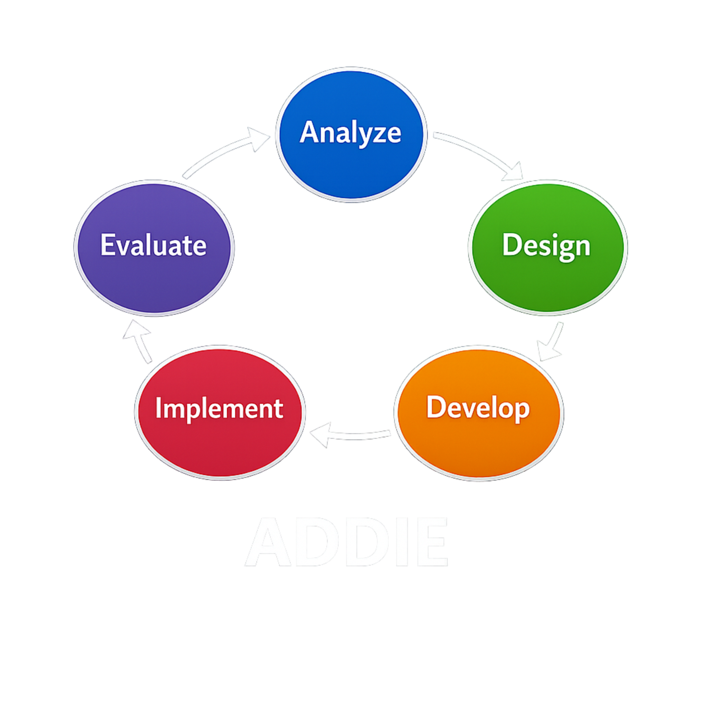

Up to this point we focused on the strategy behind strong learning design. We identified the learner, explored why the learning matters, and used Bloom's Taxonomy to think about different levels of thinking.
The next step is turning that strategy into action. Instructional designers often rely on structured frameworks to guide the creation of effective learning experiences.
One of the most widely used frameworks is the ADDIE model. It helps instructional designers move from understanding a learning need to building, delivering, and improving a complete learning experience.

ADDIE stands for Analyze, Design, Develop, Implement, and Evaluate. Each phase plays a role in guiding how instructional designers plan, build, deliver, and refine learning experiences. In the next section, you will interact with the ADDIE model to explore how each phase contributes to effective instructional design.